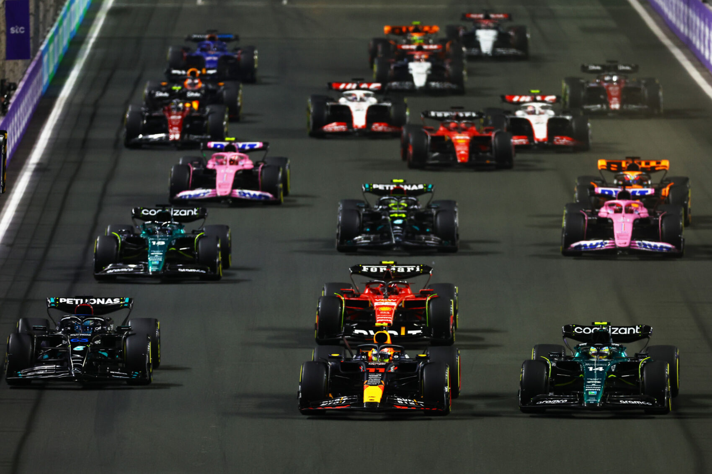
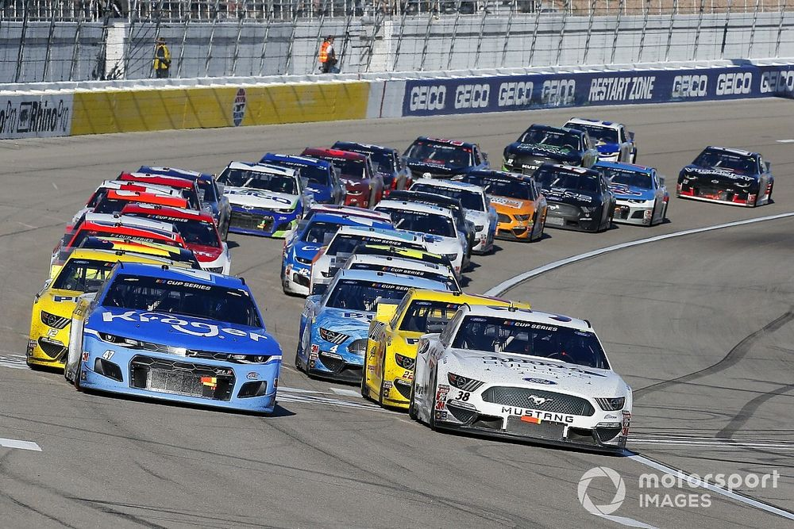

A Formula 1 (rövidítve: F1, magyarul korábban rendszerint Forma 1, angolul: Formula One ) a legrangosabb nemzetközi autóverseny-sorozat, melynek szabályait a Nemzetközi Automobil Szövetség (FIA) határozza meg. ...Az első Formula 1-es világbajnokságot 1950-ben rendezték.

A NASCAR (National Association for Stock Car Auto(mobile) Racing, azaz Széria (gyári) Autók Versenyének Nemzeti Szövetsége) az Amerikai Egyesült Államok legnagyobb autóverseny sorozatokat működtető szervezete.

A GT3 elnevezésű kategória - ezek az autók versenyeznek a Blancpain GT Seriesben - olyan, mint a túraautózásban a TCR. Vagyis tilos a gyári jelenlét a bajnokságban. Legyártják az autót, eladják a csapatoknak, onnantól rajtuk múlik, mit hoznak ki belőle.